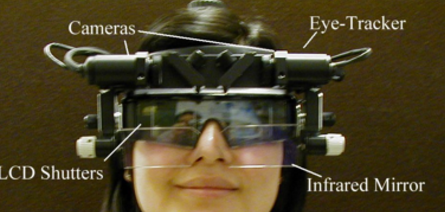

Gaze estimation and eye-tracking systems
| Point of gaze and eye movement data are used in a large variety of fields. These include studies of perception, attention, learning, training, multi-model human computer interfaces, assisting devices and clinical diagnosis. For more than three decades Prof. Eizenman and his group at the Vision and Eye Movement Lab have been at the forefront of the development of advanced eye tracking and gaze estimation systems. To learn more, click here. |  |
Analysis of Visual Scanning Patterns
| Cognitive biases in information processing play an important tole in the etiology and maintenance of neuropsychiatric disorders. Visual scanning patterns are observable surrogates of such biases and our group is developing novel methods to study and analyze these patterns. To learn more, click here. |  |
Development of Medical Instruments
| The Vision and Eye Movements Lab is developing novel methods and instrumentation for non-invasive assessment of the visual and oculomotor systems in both normal and diseased states. To learn more, click here. |  |